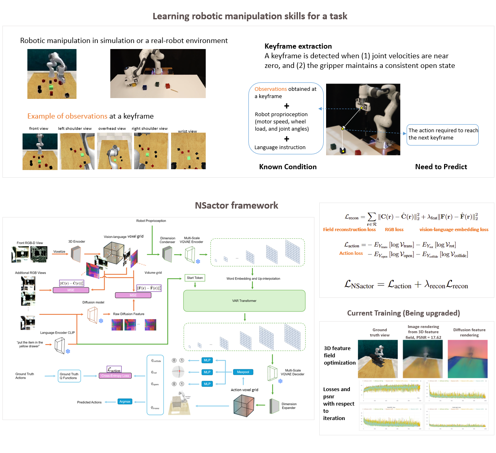
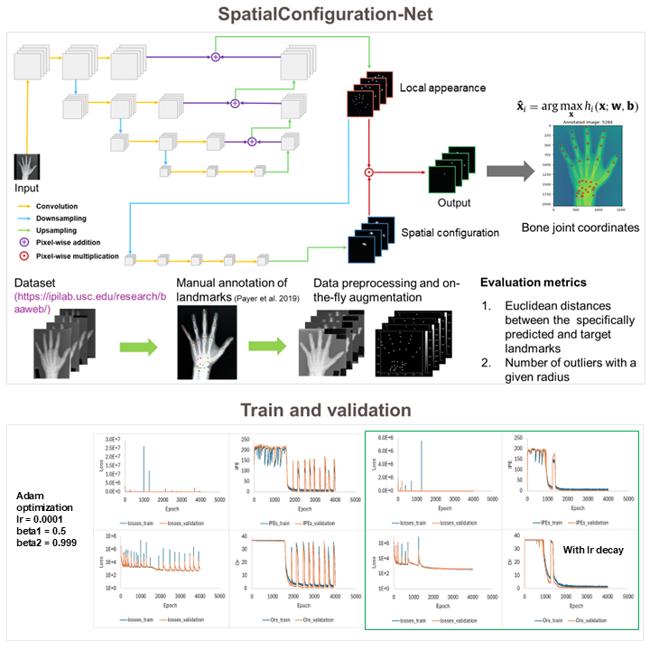
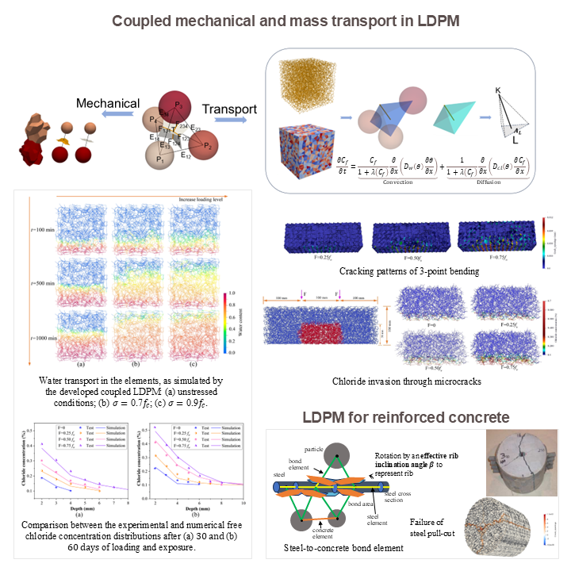
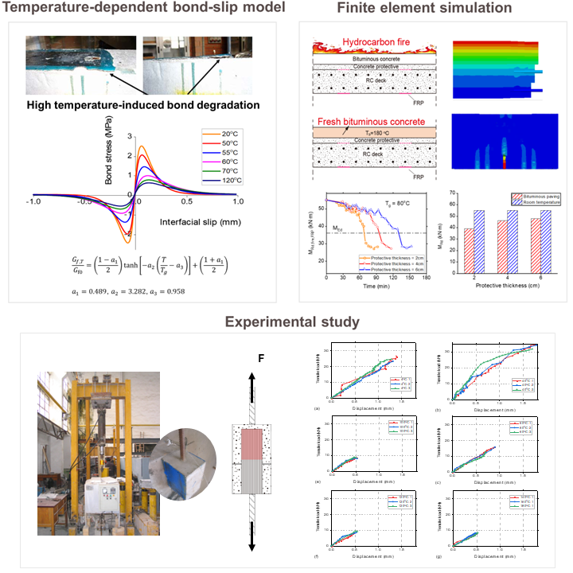
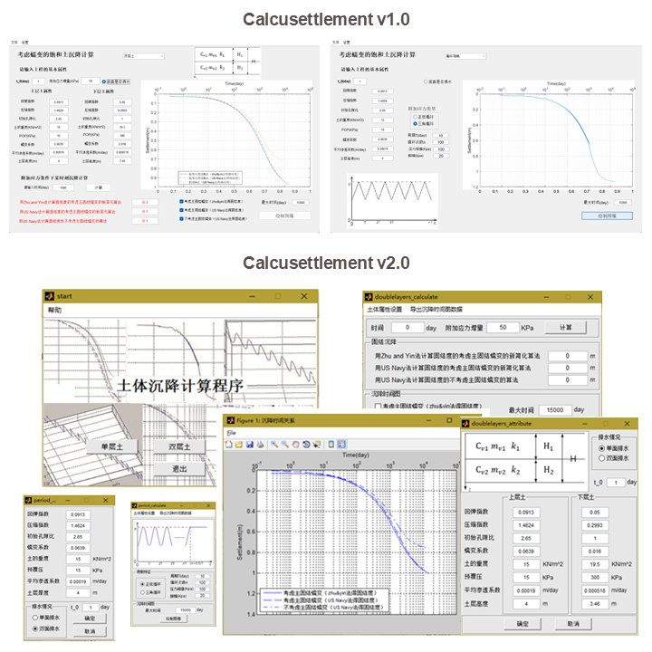

Dongge Jia
email: doj14 (at) pitt (dot) edu | CV
and transcripts |
Github

|
I am a graduate student in Computational Modeling and Simulation at the University of Pittsburgh (Pitt) and a researcher intern at San Diego State University Research Foundation (SDSURF)
I earned my master's degree and bachelor's degree in Civil Engineering from Shanghai Jiao Tong
University (SJTU) and Huazhong
University of Science and Technology (HUST), respectively. I ranked in the top two of my grade
level during both my undergraduate and graduate studies. I led a team that won a Global Gold Award (top 0.1%) in the CICSIC 2024 (原中国国际“互联网+”大学生创新创业大赛).
Before 2023, my research focused on solving ODEs and PDEs in mechanics, where I developed both
analytical and numerical solutions. Since the end of 2023, I have been focusing on machine learning. My
current goal is to develop versatile skills in AI and publish several
high-quality papers to stay at the forefront of AI.
|
|

|
Imitation Learning for generalizable long-horizon visuomotor control (2024, SDSURF)
We are developing a hierarchical behavior cloning method from unstructured demonstrations to solve long-horizon robotic tasks. Our approach leverages a generalizable neural field (GNF) to reconstruct deep 3D voxel representations, enhanced with semantic information using Stable Diffusion. The 3D voxel is decomposed into subskills, forming a chain-of-thought (CoT) for task planning. A Transformer-based model predicts actions with CoT guidance, coupling actions and subskills with learnable prompts and hybrid masking. This work is ongoing.
|
|
|
Task Offloading for Networked UAVs by Deep Reinforcement Learning (2024, SDSURF)
Networked Airborne Computing (NAC) addresses the limited onboard computing of UAVs by enabling resource sharing among multiple UAVs. In a random mobility scenario, and without prior system knowledge, we optimize task allocation through three Deep Reinforcement Learning algorithms: TD3, PPO, and DDPG. Simulations demonstrate that our methods significantly accelerate task execution compared to existing approaches.
|
|

|
Labeling bone joints of hands (2024, Pitt)
This work implements the SpatialConfiguration-Net (SCN) for anatomical landmark localization. The SCN
architecture addresses the localization task by dividing it into two sub-problems, thereby reducing
the need for large training datasets. This simplification is achieved through the multiplication of
heatmap predictions from its two components, allowing for end-to-end training. Empirical evaluations
on open-source hand radiographs demonstrate that the SCN maintains high performance even with a
limited number of training images.
|
|
|
In vivo subject-specific estimation of cervical intervertebral disc degeneration (2023 – 2024, Pitt)
A computational method is proposed to estimate the in vivo material degradation of cervical intervertebral
discs. The kinematics of the cervical spinal column is modeled using a nonlinear finite element method,
incorporating the latest nonlinear material properties from experiments. In vivo intervertebral motion data,
acquired from biplane radiography for a given subject, were used to validate the spine mechanical model and
inversely calibrate the deterioration of discs.
In Vivo Subject-Specific Estimation of Cervical Spine Discs Material Properties
Dongge Jia, Soumaya Ouhsousou, Clarissa M. LeVasseur, Jeremy Shaw, William Anderst, John C. Brigham
8th International Conference on Computational and Mathematical Biomedical Engineering (CMBE2024)
|
|
|
An efficient static solver for the lattice discrete particle model (2022 – 2023, Pitt)
This study presents the first static solver for LDPM, introducing several fundamental innovations to overcome
convergence issues. Additionally, graph coloring of the Jacobian operator, automatic differentiation, and
advanced matrix manipulations are utilized to improve computational efficiency by up to 1000 times.
An Efficient Static Solver for the Lattice Discrete Particle Model
Dongge Jia, John C. Brigham, Alessandro Fascetti
Computer-Aided Civil and Infrastructure Engineering (CACAIE 2024, 5-year IF:10.8, 2nd out of
367 in “Civil and Structural Engineering”)
|
|

|
Lattice discrete particle modeling for coupled mechanical and mass transport simulation of reinforced
concrete (2022 – 2024, Pitt)
This study presents the first static solver for LDPM, introducing several fundamental innovations to overcome
convergence issues. Additionally, graph coloring of the Jacobian operator, automatic differentiation, and
advanced matrix manipulations are utilized to improve computational efficiency by up to 1000 times.
A Novel Dual Lattice Discrete Particle Model for Multiphysics Simulation of Coupled Mechanical and
Transport Behavior in Concrete Members Subjected to Long-Term Loading
Dongge Jia, Yingbo Zhu, John C. Brigham, Alessandro Fascetti
16th World Congress on Computational Mechanics and 4th Pan American Congress on Computational Mechanics
(WCCM-PANACM 2024)
Coupled Lattice Discrete Particle Model for the simulation of water and chloride transport in
cracked concrete members
Yingbo Zhu (co-first author), Dongge Jia (co-first author, responsible for model and solution development),
John C. Brigham, Alessandro Fascetti
Computer-Aided Civil and Infrastructure Engineering (CACAIE 2024, 5-year IF:10.8, 2nd out of
367 in “Civil and Structural Engineering”)
|
|
|
Analytical solution for the full-range behavior of FRP-to-concrete bonded joints under combined
loading and temperature variations (2019 – 2021, SJTU)
This analytical study predicts the full-range deformation behavior of a mechanically loaded FRP-to-concrete
bonded joint with arbitrary bond lengths under temperature variations. The closed-form solution isolates
interfacial thermal stress effects from temperature-induced material property changes, accurately calibrating
bond-slip characteristics and interfacial fracture energy.
Full-Range Behavior of FRP-to-Concrete Bonded Joints Subjected to Combined Effects of Loading and
Temperature Variation
Dongge Jia, Wanyang Gao, Dexin Duan, Jian Yang, Jianguo Dai
Engineering Fracture Mechanics (EFM 2021, 5-year IF:4.8, 90th percentile in “Mechanical
Engineering”)
|
|

|
High-temperature-induced deterioration of FRP-to-concrete bonded joints and the resultant reduction
in the load-bearing capacity of FRP-strengthened bridge decks (2020 – 2022, SJTU)
Based on my theoretical analytical solution and high-temperature FRP-concrete interface shear test data, a
precise constitutive model for the bond-slip behavior at high temperatures was developed. This model
accurately captures the reduction in local bond strength, increased peeling deformation, and slower softening
of bond stress due to high temperatures. A finite element model was then used to analyze the effects of fires
and hot asphalt laying on the load-bearing capacity of FRP-strengthened concrete bridge decks.
Mechanical Behavior, Constitutive Model and Application of the FRP-to-Concrete Interface Under
Coupled
Effects of High Temperature and Loading
Dongge Jia
Master's Thesis, SJTU 2022
|
|
|
An elastic visco-plastic nonlinear consolidation model of soft clay under cyclic loading (2017 –
2018, HUST)
Long-term consolidation and settlement analysis of soft clay under cyclic loading is critical for settlement
prediction of infrastructures such as highways and railways. Currently available constitutive models of soft
clay do not take into account of both creep settlement and the dynamic effect of train loading. This study
establishes an elastic visco-plastic nonlinear consolidation model for cyclic loading conditions with
nonlinear behavior of permeability coefficient kv and volume compressibility coefficient
mv.
One Dimensional Elastic Visco-Plastic Nonlinear Consolidation Model of Soft Clay Under
Cyclic Loading
Dongsheng Xu (advisor), Dongge Jia, Yangguang Zheng
Chinese Preprint 2018
|
|

|
Development of long-term settlement calculation software for soft clay foundations considering
different creep effects (2017 – 2018, HUST)
To facilitate the application of research findings to the operation and maintenance of the Hangzhou Metro,
MATLAB-based software, Calcusettlement, designed for calculating the settlement of
multi-layered mixed soft clay foundations was developed. This software employs consolidation models from Zhu
and Yin (2005) and the U.S. Navy (1985), respectively. Additionally, the software integrates a module for
creep effects and allows customization of dynamic loading conditions.
MATLAB-Based Software: Long-Term Settlement Calculation Software for Soft Clay Foundations
Considering Different Creep Effects
Dongsheng Xu (advisor), Dongge Jia
China Copyright Administration, No. 04768603, 2019. (Software copyright)
|
|
Misc
|
|
I am a passionate enthusiast of Chinese opera, with a particular fondness for Henan Opera, Quju Opera, and
Yue Diao. In addition to opera, I enjoy popular music and have participated in numerous singing
competitions. While I have an interest in playing instruments like the guitar, electronic organ, and
ocarina, my skills are limited due to a lack of practice. Overall, I appreciate all genres of music,
whether ethnic, classical, popular, or experimental.
|
|
Modified version of template from here
|
|
{kind=link}